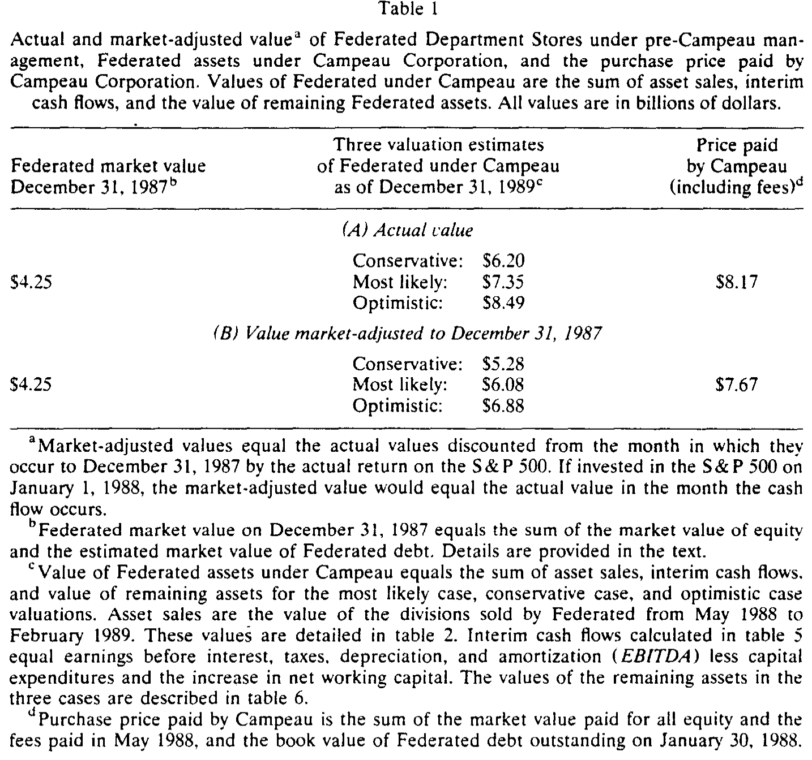
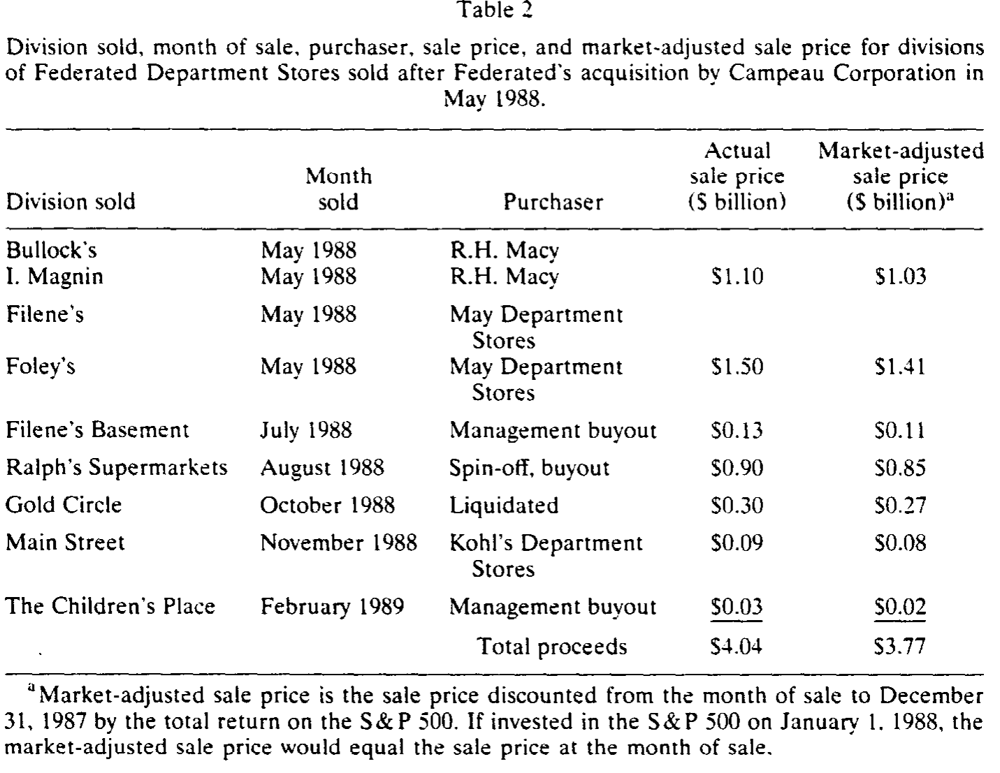
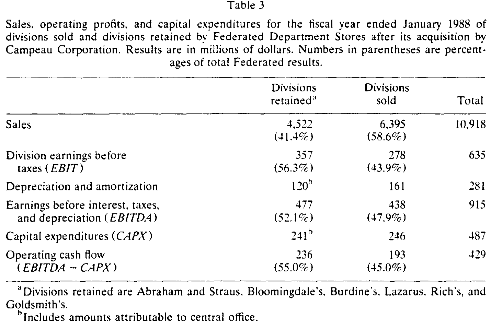
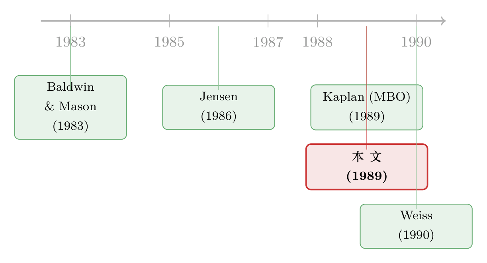

破产的那一天，公司其实更值钱了
本文读的是 Kaplan (1989, Journal of Financial Economics)：Campeau 收购 Federated 百货以申请破产保护收场，被舆论评为「八十年代最烂的十笔交易」之一；但 Kaplan 把这笔账一项一项地重算之后发现，Federated 的资产在 Campeau 手里不仅没有缩水，反而至少增值了 $1.8 billion。真正出事的，不是资产，而是 3.4 billion 美元的溢价 + 97% 的债务融资。一笔「还不起债」的交易，未必是一笔「毁灭价值」的交易。
1 引言：一笔人人喊打的交易
1990 年 1 月 15 日，Federated 百货 (Federated Department Stores) 和 Allied 百货——两家都被加拿大的 Campeau 公司控制——同时申请了破产法第十一章 (Chapter 11) 的债务保护。
舆论几乎是一边倒的。《商业周刊》把它列进「八十年代最烂的十笔交易」，《财富》干脆称它是「有史以来最大、最疯的一笔交易」。逻辑似乎无可辩驳：一家公司被买下来，没两年就破了产，那这笔收购当然是失败的，当然是「毁灭了价值」。
但 Kaplan 偏偏要在这里停一下，问一个看似多余、其实致命的问题：
破产，真的等于毁灭价值吗？
这就是全文的张力所在。如果一笔交易真像舆论说的那么糟，那它应该带来一个整体的价值损失——收购之后，这堆资产理应比收购之前更不值钱。Kaplan 要做的，就是把 Federated 这堆资产在「被 Campeau 买下之前」和「申请破产之前」两个时点上的价值，老老实实地称一称。
称完的结果，恰好是反过来的。
2 怎么称这笔账：识别的难点不在因果，而在「值多少」
先说清楚，这是一篇临床研究 (clinical study)，不是跑回归的论文。它只研究一笔交易，没有处理组、对照组，也没有工具变量。它的「识别」难点，不在「Campeau 是不是造成了价值变化」，而在一个估值问题：Campeau 治下的 Federated 资产，到底值多少钱？
收购前那一头是好称的。1987 年 12 月 31 日——Campeau 出价前三周——Federated 股价收在 $32.875，88.9 million 股，对应股权市值 $2.93 billion；再加上估算的债务市值 $1.33 billion，整堆资产（股权 + 债务）的市值是 $4.25 billion。这就是「之前」。
难就难在「之后」。资产已经被拆散卖掉、塞进了 Campeau 这个高杠杆结构里，市场上不再有一个干净的价格。于是 Kaplan 把 Campeau 治下 Federated 的价值拆成三块，分别去估：
$$ V_{\text{Campeau}} = \underbrace{3.77}_{\text{asset sales}} + \underbrace{0.22}_{\text{interim cash flows}} + \underbrace{2.09}_{\text{remaining assets}} = 6.08 \;\; (\$\,\text{billion}) $$
上式中的数字都已经「市场调整」到 1987 年 12 月。所谓 市场调整 (market-adjustment)，是把每一笔现金流按它发生月份到 1987 年底的 标普 500 总回报 (S&P 500 total return) 折回去。这相当于问：如果当年把那 $4.25 billion 直接买进标普 500，会变成多少？换句话说，它假设「如果 Campeau 没出现，Federated 的资产表现既不会比大盘好，也不会比大盘差」。这是一把公允的尺子。
这里还藏着一个刻意保守的设定：折现时假设 Federated 资产的 beta 等于 1。可事实上 Federated 的股权 beta 只有 0.95，Scholes-Williams beta 是 1.11，无论用哪个推出的资产 beta 都会小于 1。而 1987 年底到 1989 年底，标普 500 涨了整整 40%。也就是说，用 beta = 1 去折现，恰恰低估了 Campeau 治下资产的价值。Kaplan 把天平有意识地压向了「不利于自己结论」的那一边。
三块当中，第一块「资产出售」是有真实成交价的，最硬；后两块「期间现金流」和「剩余资产价值」需要假设，所以 Kaplan 都给了保守 (conservative)、最可能 (most likely)、乐观 (optimistic) 三套估计。
数据来源也都摆在台面上：Federated 的 10-K 年报、1988 年 11 月的次级债招股书、用来给债券估市值的 Moody's Bond Record，以及——这一点很关键——Merrill Lynch 在 1989 年 12 月 13 日提交给 Federated 管理层和债权人的那套估值。后者尤其敏感，因为 Merrill 是「Campeau 的财务顾问」，有把价值往高了说的动机。Kaplan 对此心知肚明，所以又用 Federated 后来的真实经营结果做了一套独立的对照估计。
3 主要结果：资产增值，但买家破产
把账算完，结论摆出来是这样的（详见表 1）：

Table 1
- 收购前（1987 年 12 月）：
$4.25 billion。 - 收购后（市场调整到 1987 年 12 月），最可能：
$6.08 billion——增值超过$1.8 billion。 - 即便用最保守的假设，也有
$5.28 billion——仍比收购前多了约$1 billion。 - 乐观情形下高达
$6.88 billion——增值超过$2.6 billion。
无论哪一套，结论都一样：Federated 的资产在 Campeau 手里变贵了。
那破产是怎么回事？接着，一个自然的问题是：既然资产增值了，钱去哪儿了？
答案在「买家」这一侧。Campeau 为 Federated 付出的总价是 $8.17 billion（市场调整后 $7.67 billion）。从 $32.875 一路加价到最终成交的 $73.50，涨幅 124%，溢价高达 $3.4 billion。把市场调整后的购买价和最可能的资产价值放在一起：
$$ \text{Overpayment} = 7.67 - 6.08 = 1.59 \;\; (\$\,\text{billion}) $$
Campeau 多付了约 $1.6 billion。但 Kaplan 一针见血地指出：光是多付钱，并不足以把公司逼进破产法庭——多付的那部分，本该是 Campeau 自己的股东去承担的损失。真正致命的，是融资结构：Campeau 用债务支付了这笔收购的 97%（含承接的 Federated 债务，至少 $7.96 billion 中的 $7.96 是债）。它真正投进去的现金只有 $193 million，连名义上的 $1.40 billion 股权里，都有 $1.21 billion 是借来的。
于是反转出现了：
Campeau 的破产，不是因为 Federated 是一门坏生意，而是因为 Campeau 付太贵 + 借太多 + 自有资本太薄。如果它当初哪怕用 $1.59 billion 的真股权来填上「溢价」这个窟窿，把债务结构安排得能被资产出售和经营现金流覆盖，Federated 根本不会走进破产法庭——Campeau 只会赔光自己的股权投资而已。
这正是全文的核心命题：一笔高杠杆交易可以一边增加资产价值，一边还不起债。「还不起债」和「毁灭价值」是两件事。Federated 破产前，那些没卖掉的部门在 1989 财年还创造了超过 $370 million 的经营利润——它们是健康的生意。这跟传统意义上的「财务困境」截然不同：传统困境是生意先衰败、再还不上债、于是被认定为烂资产；而 Federated 是生意好好的，只是头上压了一座还不动的债山。（关于「高杠杆的债到底有多危险」，可参见 Kaplan 自己后来的工作《他们借了九成的债，可股票却几乎没变得更危险》；而「同样借到九成债，为什么有的公司脱胎换骨、有的只是勒紧裤腰」，则可参见《组织形态与高杠杆交易的后果》。）
4 「卖资产的好手」：增值从哪里来
如果价值真的增加了，那它是怎么变出来的？这就要看 Campeau 上任后做的第一件事——卖资产。
拿下 Federated 还不到九个月，Campeau 就卖掉了 15 个运营部门里的 9 个。表 2 把每一笔出售都列了出来：买家、月份、成交价。五个部门卖给了别的百货公司（如 R.H. Macy、May Department Stores），两个卖给了含管理层的投资者团体，一个被清算，还有一个（Ralph's 超市）以杠杆收购的方式被「分拆」出去。

Table 2
九个部门一共套现 $4.04 billion，市场调整后是 $3.77 billion。注意这个数字：它相当于收购前整个 Federated 价值（$4.25 billion）的 89%。
而真正精彩的对比在下一张表（表 3）。Campeau 卖掉的这些部门，贡献了 Federated 58.6% 的销售额，却只占 43.9% 的 EBIT、47.9% 的 EBITDA、以及 45.0% 的经营现金流。

Table 3
换句话说，Campeau 卖掉了大约一半的资产（按盈利能力算），却换回了整个公司过去价值的 89%。Kaplan 给了他一句不无讽刺的评价：Campeau 是一个「非常能干的资产推销员 (a very able salesman of assets)」。
这背后可能的增值来源有好几种，但 Kaplan 诚实地承认，他无法明确区分它们各自的贡献：
- 把资产卖给更高效的管理者（无论是同业，还是管理层收购）——这是真正的经济价值创造；
- 税收利益——价值的转移（从纳税人转给了交易方）；
- 买家自己也多付了钱——价值的转移；
- 以及那个永远甩不掉的可能：市场在 1987 年底低估了 Federated，增值只是「纠错」——同样是转移，不是创造。
这是任何依赖市场价值的研究都绕不开的软肋，Kaplan 没有回避。
有意思的是，$3.77 billion 的出售所得，差不多正好是 Campeau 为整个 Federated 所付 $7.67 billion 的一半。如果这些被卖出的部门的成交价，反映了所有 Federated 资产（包括没卖的那一半）的预期增值，那么从事前 (ex ante) 看，Campeau 也许并没有「买贵」。只是债券市场从一开始就将信将疑——First Boston、Dillon Read 和 Paine Webber 当时就没能把那 $2 billion 过桥贷款里约 $400 million 再融资出去。
5 文献脉络
把这篇论文放回它的时代，会看得更清楚。
八十年代是「杠杆」的年代，也是迈克尔·詹森 (Michael Jensen) 思想的年代。Jensen (1986) 提出自由现金流的代理成本 (agency costs of free cash flow)：经理人手里趴着花不掉的现金，往往会去做毁灭价值的投资；而债务是一剂解药，它逼着公司把现金「吐」出去还债。（这条主线，可参见《现金为什么一定要「还」出去？——四十年后，重读 Jensen 的自由现金流》。）顺着这个逻辑，Jensen (1989) 进一步把 LBO 看作一种「私有化的破产」——主动投资者用高杠杆给公司施加纪律。

但高杠杆的另一面，是「还不起债」的风险。这就接上了财务困境的老问题：Baldwin and Mason (1983) 研究的 Massey Ferguson 案例，是「生意衰败 → 还不上债」的经典剧本。Kaplan 这篇 Campeau 研究的妙处，恰恰在于它把这个剧本反过来讲：生意没衰败，债却还不上了。
而 Kaplan 本人正是这条「杠杆交易到底创不创造价值」实证脉络的核心人物。在 Kaplan (1989b) 里，他已经系统地证明了管理层收购 (MBO) 之后公司的经营和价值都在改善；Campeau 这篇可以看成同一关怀下的一个「极端样本」——一个最终破产、却仍然增值的样本。再往后，Weiss (1990) 等人则继续追问破产程序本身的效率与优先权问题。Campeau 案恰好坐在「杠杆能创造价值」与「杠杆会引爆困境」这两条线的交叉点上。
6 评论与延伸（Q&A + 研究方向）
(a) 几个可能的疑问
Q：既然资产「增值」了，会不会只是因为 Merrill Lynch 把估值往高了报？
Kaplan 对这一点非常警惕，因为 Merrill 是 Campeau 的顾问，确实有夸大动机。他指出 Merrill 可以从两头注水——抬高 EBITDA/销售额，或抬高估值乘数。但 Merrill 给出的乘数（困境情形下 value/EBITDA 为 5.7–6.2、value/sales 为 0.58–0.64）与同类交易相比是合理的；而且他还用 Federated 后来的真实经营结果做了独立对照。最可能情形的
$6.08 billion并不依赖于 Merrill 的乐观口径。
Q：「破产 ≠ 毁灭价值」这个结论，会不会只是把破产成本忽略了？
这是最该追问的地方。Kaplan 的估值确实没有计入 Chapter 11 之后的直接破产成本和财务困境的间接成本。但他给了一个很漂亮的「临界值」检验：剩余部门的终值要跌到
$0.26 billion（市场调整后，约合 1989 年 12 月的$0.37 billion）以下，整笔交易才会变成净毁灭价值。考虑到这些部门 1989 财年还赚着$370 million，要跌破这个临界值几乎不可能。结论对破产成本是稳健的。
Q：增值到底是「真创造」还是「再分配」？
Kaplan 老实说他分不清。卖给更高效的管理者属于真正的经济价值创造；而税收利益、买家多付、以及市场原本低估，都只是价值在不同主体之间的转移。这是本文最大的局限，也是它最诚实的地方。
Q：这跟「Campeau 多付了 $1.6 billion」矛盾吗？资产增值 $1.8 billion，又多付 $1.6 billion，到底谁赚了？
不矛盾，因为这是两笔账。资产从
$4.25涨到$6.08billion，是「资产侧」的故事；Campeau 付了$7.67billion，比$6.08多付$1.59billion，是「交易侧」的故事。增值的$1.8 billion归了卖方旧股东（他们拿到了 124% 的溢价），多付的部分则是 Campeau 股东和债权人的损失。社会总价值增加了，但分配极不均匀。
Q：单一案例，外部效度有多强？
弱，这是临床研究的天然代价。它无法告诉你「LBO 平均而言创不创造价值」，只能极有说服力地证明一个存在性命题：哪怕一笔以破产收场、被全民痛骂的交易，资产价值也可能是增加的。它打的是「破产 = 失败」这个直觉，而打这个直觉，一个干净的反例就够了。
Q：97% 的债务融资，为什么是「自找的」而不是「市场逼的」？
因为 Campeau 收购前本就高杠杆：1988 年 1 月 31 日其债务账面值
$4.57 billion，股权账面值仅$0.09 billion（加元），市场股权也不到$0.70 billion。它几乎没有可动用的股权缓冲。Kaplan 正是据此论证，应当把那些「股权贷款」也算作 Federated 的债务——这笔交易的脆弱性是结构性的，不是运气不好。
(b) 几个可能的研究问题与提案
1. 把「破产 ≠ 毁灭价值」做成大样本检验。 - 【经济故事】Kaplan 用一个反例打穿了直觉，但能否在大样本上证明：那些「因还不起债而破产、但资产本身健康」的高杠杆交易，事后资产价值并未下降？区分「经济性困境」与「纯财务性困境」。 - 【可行性】中。需要 1980s–2000s 的 LBO/HLT 样本、破产记录、以及资产层面的后续成交价或经营现金流。识别难点在于估「反事实价值」，可借鉴 Kaplan 的市场调整法。doable，但估值的主观性会被审稿人反复质疑。
2. 用公司债价格给「破产 ≠ 毁灭价值」做个市场化的检验。 - 【经济故事】如果资产健康、只是杠杆过高，那么在违约/破产事件中，债权人的回收率应当显著高于「经济性衰败」型困境。债券价格里应能读出市场对「资产 vs. 杠杆」的区分。 - 【可行性】高。TRACE 成交数据 + Moody's/Markit 违约回收率数据库，可按困境类型分组比较回收率与利差反应。这与本博客关注的公司债/信用市场方向高度契合，识别相对干净。
3. 「能干的资产推销员」效应：拆解 LBO 后资产出售的买家身份。 - 【经济故事】Campeau 卖掉一半资产却换回 89% 的价值，提示「资产被卖给更高效经营者」可能是真创造而非转移。能否用买家身份（同业 vs. 管理层 vs. 财务买家）来区分增值的来源？ - 【可行性】中。需要逐笔出售的买家分类与买家后续经营数据，样本构建费力，但 SDC/手工收集可行。
4. 外资买家会不会更容易「付太贵」？ - 【经济故事】Campeau 是加拿大公司，跨境收购美国零售商。跨境买家是否系统性地支付更高溢价、采用更高杠杆，从而更易陷入「资产增值但买家破产」的格局？ - 【可行性】中。跨境并购样本 + 溢价与杠杆数据可得；难点在控制行业与时点的选择效应。与外资持有人这一主题相关，值得一试。
7 我的判断
这是一篇「以小博大」的范本。它没有花哨的计量，只有一笔交易、几张表、和一套被刻意压向保守的估值，却干净利落地拆掉了一个根深蒂固的直觉——把「还不起债」和「毁灭价值」划上等号。它的最大贡献，是为后来整个「LBO/HLT 创不创造价值」的实证文献，提供了一个概念上的分水岭：评价一笔杠杆交易，要把资产侧的价值变化和交易侧的定价与融资错误分开来看。
对识别，我最大的保留有两点。其一，估值的主观性：后两块（期间现金流、剩余资产）依赖假设，尽管三套情景给了边界，但本质上仍是「用合理乘数算出来的数」，不是市场价。其二，增值来源无法分解：真创造（更高效经营）与纯转移（税收、多付、纠错）混在一起，而它们对「这笔交易是好是坏」的规范判断截然不同——如果增值大头来自税收和买家多付，那「社会价值创造」的成色就要打折。
我接下来最想看到的，是把这个「资产 vs. 杠杆」的二分，搬到公司债与回收率上做一次市场化检验：如果 Kaplan 是对的，那么「健康资产 + 过高杠杆」型违约的债权人回收率，理应系统性地高于「经济性衰败」型违约。这是一个用今天的数据完全能做、而且直接关乎信用风险定价的问题。
参考文献
Baldwin, C. and S. Mason (1983). The resolution of claims in financial distress: The case of Massey Ferguson. Journal of Finance 38, 505–516.
Jensen, M. (1986). Agency costs of free cash flow, corporate finance and takeovers. American Economic Review 76, 323–329.
Jensen, M. (1989). Active investors, LBOs, and the privatization of bankruptcy. Journal of Applied Corporate Finance 2, 35–44.
Kaplan, S. (1989). Campeau's acquisition of Federated: Value destroyed or value added. Journal of Financial Economics 25, 191–212.
Kaplan, S. (1989). The effects of management buyouts on operations and value. Journal of Financial Economics 24, 217–254.
Weiss, L. (1990). Priority claims and ex post re-contracting in bankruptcy. Working paper (Tulane University, New Orleans, LA).